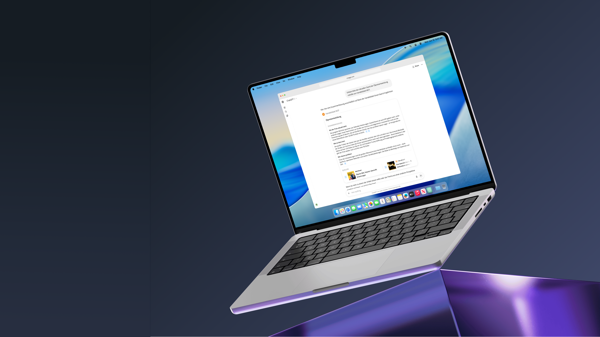

Synapse.
Integrating AI and scalable design systems for digital media.
Overview
Work across Handelsblatt Media Group covering three core areas: scaling the design system with WCAG compliant components and tokens, designing conversational UI for ChatGPT and Claude MCPs, and guiding external agencies through clear UI standards, alongside redesigns under CMS constraints.

Business Context and Scope
At Handelsblatt Media Group, the baseline scope centered on maintaining and scaling the shared design foundations across two distinct editorial brands: Handelsblatt and WirtschaftsWoche.
As the organization set its strategic direction toward proprietary AI products, design expanded to explore reader-facing conversational interfaces externally while leveraging internal AI tooling to drive delivery efficiency.
This required evolving the design infrastructure toward AI-readiness—systematically closing core component gaps, standardizing design tokens, and elevating delivery standards, all while navigating the practical constraints of legacy surface redesigns and external partner alignment.
Refining Core Components and Standards
To resolve recurring component gaps, I led the design and documentation for Modals and Tooltips. Grounded in existing semantic tokens, I specified styling for both brands, ensured WCAG compliance, and defined key edge case rules. Working closely with developers and designers through reviews under the four eyes principle, while also supporting reviews on other system tickets, this work streamlined developer handoffs and contributed to overall AI readiness.


Balancing Platform Rules and Brand Identity
We launched an MCP connector allowing readers to access Handelsblatt coverage seamlessly inside Claude and ChatGPT. Given the minimal visual flexibility of external chat interfaces, my core focus was analyzing how to create distinct brand presence. By aligning official platform rules with our brand identity, I designed and delivered structured conversational screens that make our editorial voice immediately recognizable.
Automating Workflows with Custom Agents
Alongside external interfaces, I initiated two internal agents on Langdock to reduce team overhead. The first guides designers through structured prompt constraints to generate brand consistent illustrations for direct production use. The second automates our design system inbox, producing daily and weekly digests to spot component gaps while drafting replies from existing documentation to lighten routine support work.


Guiding Agency Development for the Abo Shop
I was responsible for delivering the Abo Shop interface guidelines to assist our external agency during development and support future iterations. Across templates, I structured rules for grid, spacing, typography tokens, and visual dos and donts into a clear guide. Before handing the specification over to Vertrieb, I organized a peer review with two design colleagues, and the guide received positive feedback for clarifying external implementation.
Migrating WiWo Club within CMS Constraints
Addressing legacy architecture risks and visual fragmentation, I was responsible for migrating the WiWo Club event pages onto our core platform. The primary challenge was translating existing event content into our modular Livingdocs CMS components without losing editorial flexibility. By establishing standardized page structures, I aligned the event experience with our active design system while eliminating data security vulnerabilities.